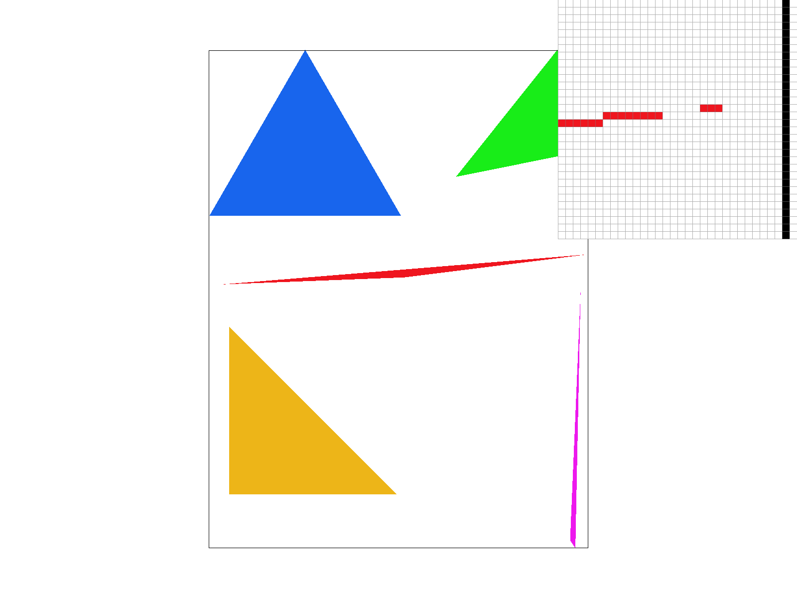
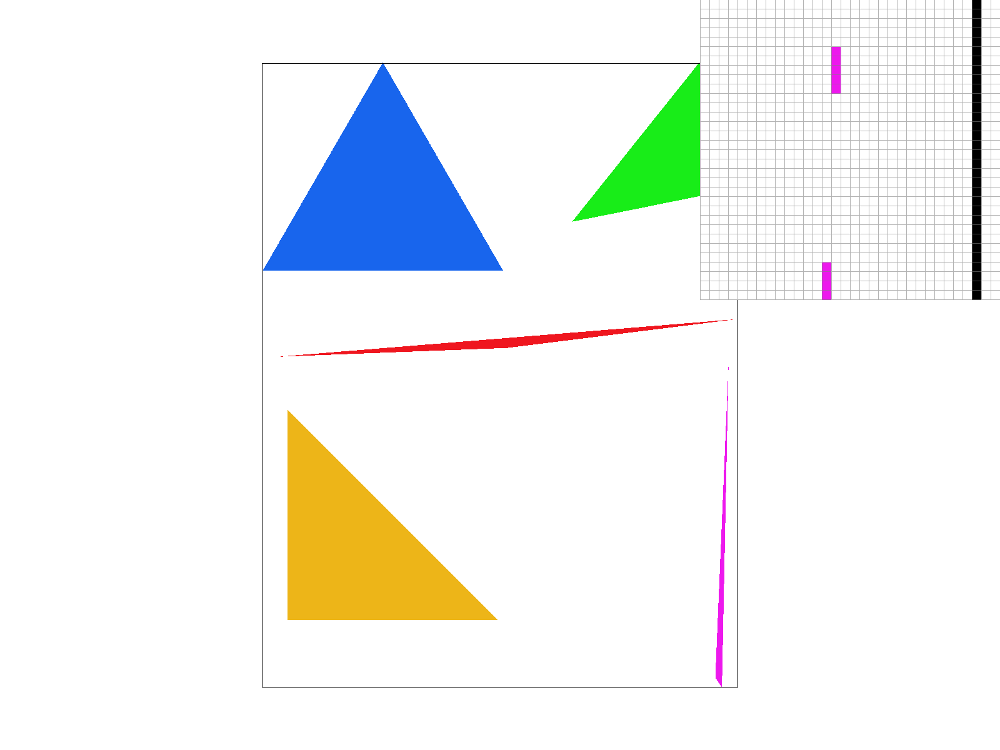
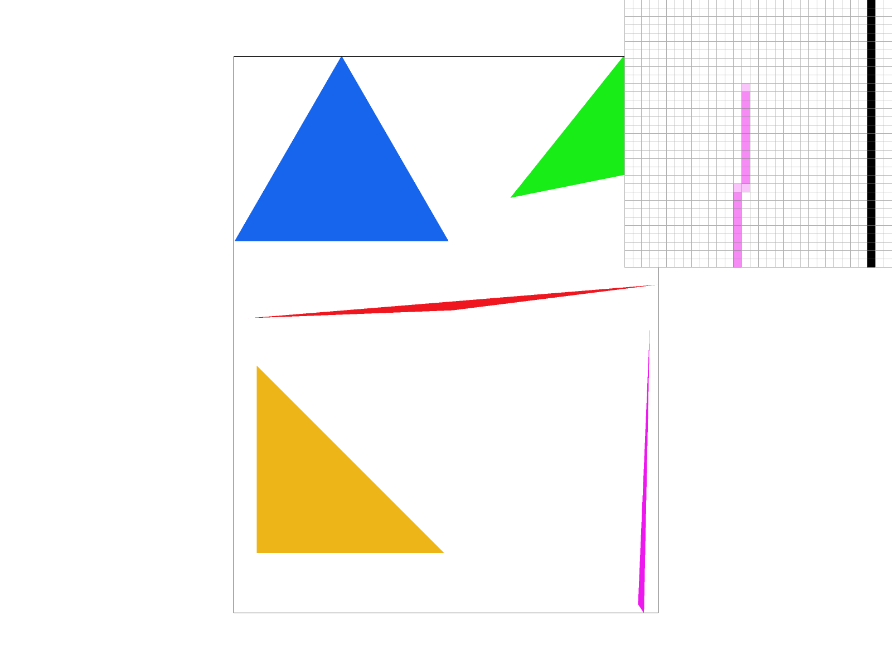
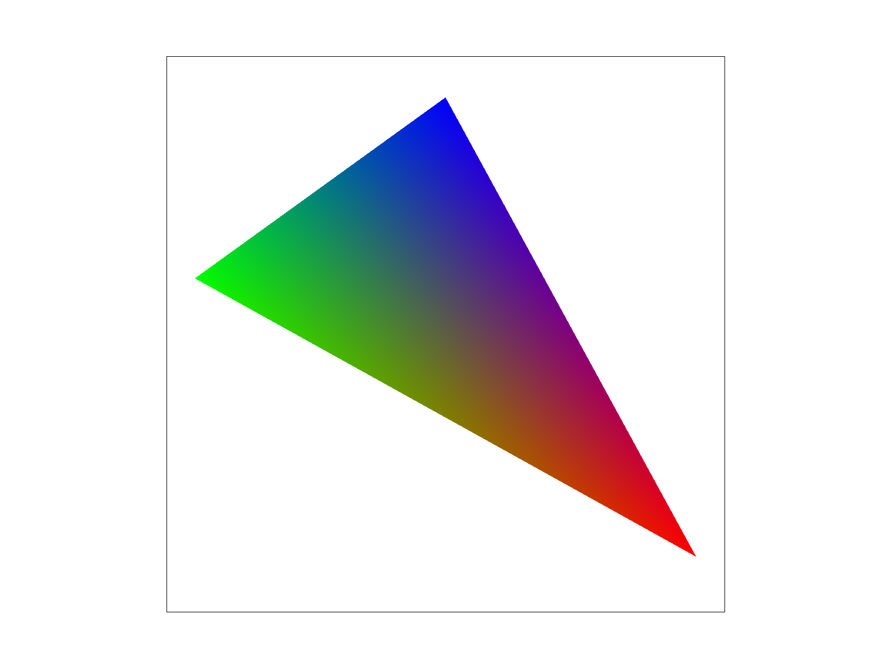
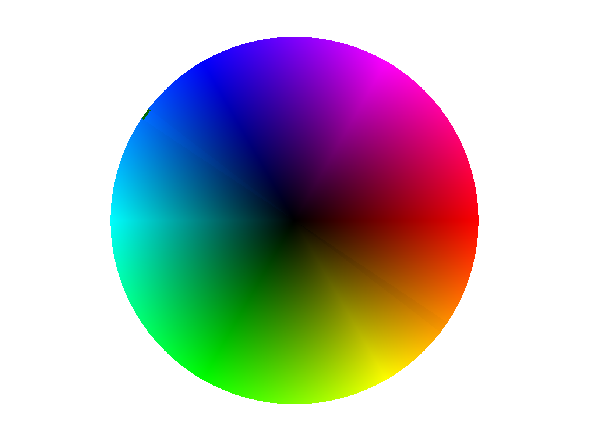
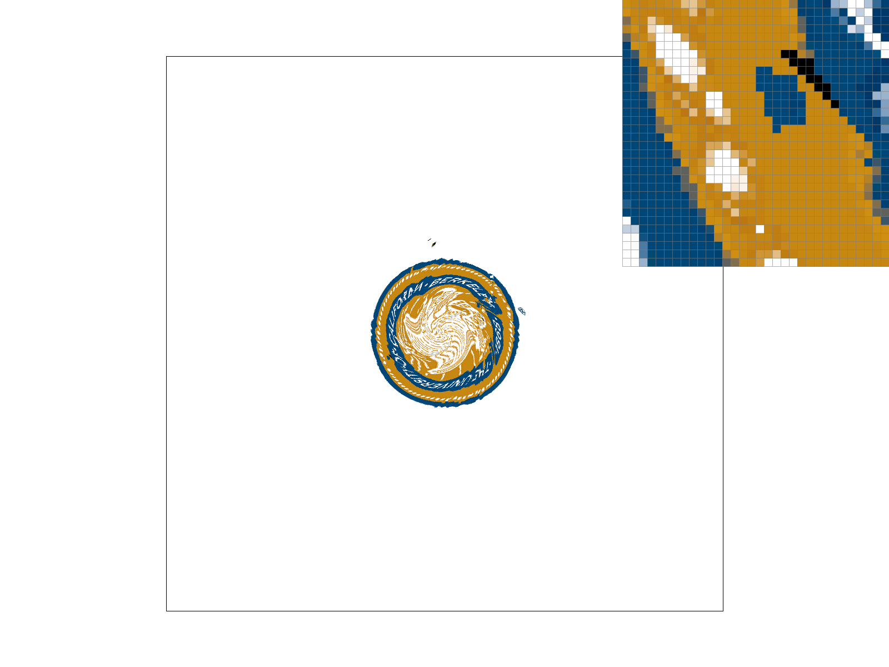
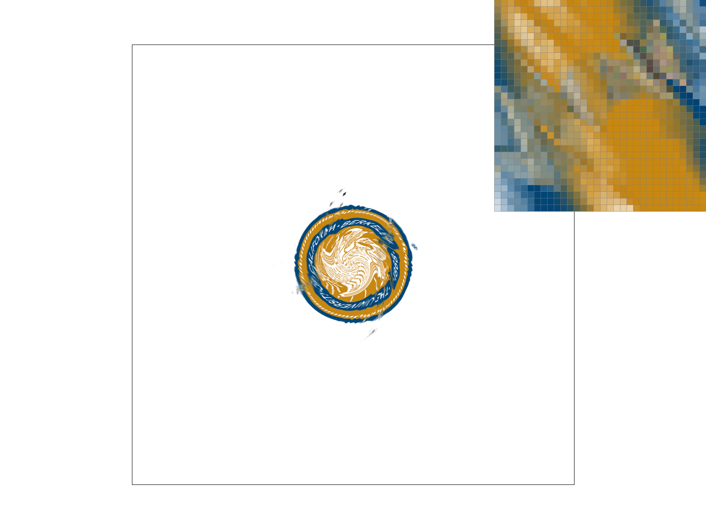
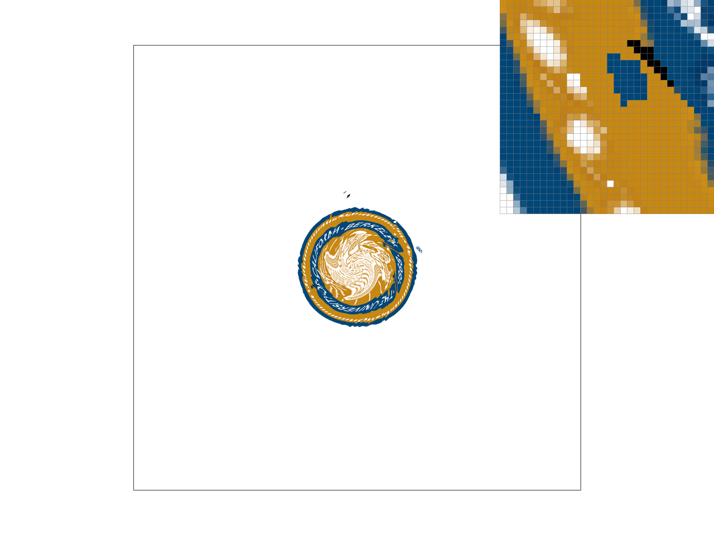

I implemented some basic functions of rendering: displaying triangles, transforming 2-dimensional geometry, and mapping patterns onto triangle shapes. Barycentric coordinates and blending layers of MipMaps were probably the most interesting elements to work with, as the coordinates are a neat way to proportionately convey points in a triangle and blending MipMap layers is visually rewarding. Besides course content, the project demanded that I update my OS in order to download XCode, that I figure out the GitHub token system, that I figure out C++ and HTML, and that I learn of the existence of GitHub pages. Furthermore, I should have planned for all questions I may have answered in the two or three Project Parties I could attend, instead stuck with no Project Parties post-deadline and cursed to wait on Ed, which drained me of every one of my remaining slip days, of which my reserves are frightfully finite. What is interesting about that is that I did not expect it even though at least half of that logically follows my history, and so the logistics of accessing the project at all is more forefront in my mind than anything I actually did in the project proper.
And my triangle tips still look broken at higher rates of sampling.
For every unit in a given sample space, every pixel in this case, the location is checked against the boundaries of the given triangle. If the point is on the proper side of each line of the triangle—put simply, inside the triangle—then that spot will be colored in using a color, texture, or other means of filling the shape.
The way my algorithm works, for every row, every box is checked until a box is reached that must be filled, raising a flag. After that, every box is checked until encountering a box to be left empty. Since a triangle lacks concavity, there are no possible boxes that need to be filled once beyond the first (only) block of filled boxes and the program can safely jump to the next line. The only case in which this algorithm will check as many boxes as checking each sample within the bounding box of the triangle is if the right side of the triangle is vertical. In every other case, this system will be able to ignore any blank tiles on the far side of the triangle. I understand that my additional if-statements will take a not insignificant amount of processing, but I would hope the trade-off is an improvement on checking each sample within the bounding box of the triangle.
|

|
Extra Credit(?): My optimization is as described in the paragraph above, ignoring any blank tiles for the rest of the row upon hitting the end of the triangle and jumping to the next row. Since I worked out my logic while waiting for help understanding the equation itself, the only version that exists is that optimized version, and thus I have no point of comparison. On my device, the clock indicates that test4 runs in about 0.0027 seconds.
My supersampling algorithm initally follows the structure of my earlier work. For each pixel, instead off immediately filling the tile I have it run the same program on a smaller scale, with the pixel defining the bounding box and the tiles being defined as a fraction of a pixel defined by the sampling rate. Each subpixel's color is input into sample_buffer, which will have sample_rate many colors recorded per pixel. The related functions operate under the assumption that sample_buffer is structured such that all sample_rate many colors of a pixel are recorded together, in order—that is, for sample_rate of 16, items 0 through 15 are the colors of the first pixel, items 16-31 are the colors of the second pixel, and so on. From there, the colors are averaged using the given functions of Color and the result is used for coloring in the triangle.
Supersampling is useful because it provides more information with which to determine what color to paint the given pixel. In an extreme case, consider a black pixel with a tiny white dot in the center. At sample_rate of 1, that pixel would be white because that is the color at the sampling location. With additional samples, the pixel space would be better represented because outliers would be smoothed out. To do this, most functions needed multiplication by the sample rate in order to keep everything aligned. Since there are sample_rate many more colors per pixel, the multiplication ensures each pixel's calculations are started at the right point.
Supersampling is used for antialiasing because it softens the transition between pixels along the slope of the triangle's edge. Suppose a slope goes up one pixel height from one end to the other. The result with a sample_rate of one would be two rows of pixels, stepping up in the middle. Each pixel is either in the triangle or not, without taking into account partial intersections. Supersampling takes in multiple data points, so the pixel's ultimate color can reflect the amount of intersection with the triangle.
|

|

|
|
|
|
As described above, the system will take more data points into account as the sampling rate increases. At sample rate 1, the fully colored pixels result in the tip appearing to be disconnected from the rest of the triangle. This is smoothed over with higher sample rates, as partial intersection is colored in, rather than forced to be fully empty or fully filled, with more nuance as the sampling rate increases. One caveat: my results were confirmed to be reasonable by a class staff member, but I cannot explain why the tip of the triangle still appears disconnected at higher sample rates.
Here, cubeman is reaching up to... well, it started as a wave, but now it's more of punching the air. In order to create a sense of stretching up, I elongated the left side of the torso relative to the right by adjusting the triangle coordinates and slightly stretching and tilting it. I moved the head to match the adjusted position of the neck. From there, I moved the limbs to the desired pose. The joints are imagined to be located on the edges of the torso. Stretched limbs have more of a gap between the pieces, though the pieces themselves are unchanged. If I had more time, I would not have stretched the limbs any longer, but since the bent leg and bent arm are positioned in a way involving the z-axis, I might have shortened the limb pieces to match the perspective better. I probably should also have made the entire thing smaller, since the extended leg had to be moved up in order to not be cut off, messing with the overall proportions of the cubeman. I would also make the pose less ambiguous, as though some motion is present, exactly how the figure is supposed to be moving is unclear.
Barycentric coordinates comprise a system for mapping points in a triangle based on proportional distance from the vertices. In the image below, each vertex of the triangle is assigned a color. Barymetric coordinates indicate how far away a given point is from each vertex of the triangle proportionately, that they add to one. Here, those coordinates are visualized by using those proportions to determine in what proportions to mix the colors. The resultant gradient shows how the system provides a distinct set of coordinates for each point in the triangle. Further, since this is based on the vertices, this system works with any triangle.
|

|

|
In pixel sampling, the Barymetric coordinates of a given point in a triangle are used to find the parallel point in a texture, that the color found there be mapped onto the point in the triangle. In more detail, for a given point in the triangle the distance from said point to each vertex is found, and the ratio is stored as three values—alpha, beta, and gamma—adding to one. Using alpha, beta, and gamma this time in conjunction with the vertices of the texture triangle, one can map the location from the triangle onto the texture and then find the color at that point. From there, the pixel in the triangle is to be filled with that color and it moves on to the next point. Since the function is unlikely to produce a perfect one-to-one pairing of pixels, there are different sampling methods to determine which color to select. Nearest pixel sampling chooses to pull the color of the nearest pixel to the indicated point on the texture. Bilinear pixel sampling takes the colors at the four surrounding pixels and combines them in proportion to how near each color is to the point.
|

|

|
|

|
|
It's difficult to find a good example, but this will do. At 1 sample per pixel, the edges appear more rounded in bilinear sampling compared to the harder colors of nearest. At 16 samples per pixel, it's a little tougher to see but the blending is smoother in bilinear sampling than in nearest sampling. See the top right corner, where the white markings are more discrete with nearest sampling and softer in bilinear sampling. There would be a larger difference if there were more varied colors in close proximity, as nearest pixel sampling would result in jumping between a number of different colors from one pixel to the next whereas bilinear sampling would result in a more blended image.
A texture can be stored at multiple resolutions, that textures of different fidelities can be pulled as the program requires. Level sampling is the process by which those alternate textures, the mipmap levels in question, are selected for presentation. Using nearest level sampling, the program will use the layer closest to the calculated level. This effectively rounds the calculated level to the nearest whole number and uses the texture associated with that number. Using linear level sampling, the program takes the colors found in the levels immediately above and below the calculated level and combines them based on how proportionally near to the calculated level each level is. The calculated level is found using the provided equations involving how movement in the texture dimensions is affected by movement in the triangle dimensions, adjusting for the texture's dimensions, and taking the logarithm base two.
Adjusting pixel sampling means choosing between nearest pixel sampling and bilinear pixel sampling. Nearest pixel sampling is quicker, as bilinear pixel sampling requires some computations. Arithmetic is quick, but it may add up. There should be no major memory differences between the two, as both send color information to sample_buffer. At worst, bilinear pixel sampling will be dealing with four colors at once, which only uses temporary memory until the helper function outputs a color. Given nearest pixel sampling makes no attempt to blend colors, bilinear pixel sampling easily displays better antialiasing by virtue of being the only pixel sampling method to try. Still, it's a functional blending that requires nothing more complicated than arithmetic.
Adjusting level sampling means deciding between zero level sampling, nearest level sampling and linear level sampling. Zero level sampling, of course, uses the highest fidelity image and requires no additional computation, but it resultantly cannot adapt to the program's needs. Nearest level sampling only needs to round to the nearest whole number. Assuming rounding requires minimal computational power, nearest level sampling will be negligibly slower than zero level sampling, but it shouldn't require any significant additional memory, and it will be using a more appropriate texture for the triangle it is filling. Linear level sampling will require more math be done, but more importantly my implementation adds another if-statement, meaning the processing time will most likely be impacted. It will require two levels be taken into consideration, but that shouldn't significantly affect the memory because the computation takes place entirely within a helper function, whose variables should be forgotten the moment it returns. While each level already defines a predetermined image of lower clarity, linear level sampling takes the additional step of blending the two nearest layers together, making for a further blended image. While I imagine it would make for a better image, I do wonder if it might be less useful at higher levels, when the textures are so abstract they may not blend well at all. On a separate note, the choice of level sampling method doesn't have major memory ramifications, but the number of levels stored by the program, or the choice to have levels at all, will.
Adjusting samples per pixel means adjusting the sample rate, here limited to 1, 4, 9, and 16. It will take longer to compute as the sample rate increases, since each subpixel must go through the entire process of determining a color in order to fill out sample_buffer, and the number of subpixels is directly related to the sample rate. The memory is affected because sample_buffer must be large enough for as many pixels as are in the space, multiplied by the sample rate, which again is what is being adjusted here. The antialiasing does improve noticeably with the increase in sample rate.
I'll try to participate. I will.
I will... Soon.
https://cal-cs184-student.github.io/project-webpages-sp23-Mitchell-Yu/proj1/index.html